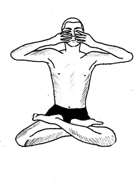

प्राणायाम > भ्रामरी प्राणायाम :

-
भ्रामरी प्राणायाम, जिसे "हुमिंग बी प्राणायाम" भी कहा जाता है, मानसिक तनाव को कम करने और ध्यान
केंद्रित करने के लिए एक प्रभावशाली प्राणायाम तकनीक है।
भ्रामरी प्राणायाम करने की विधि :
- आरंभिक स्थिति: सुखासन या पद्मासन में बैठें और रीढ़ को सीधा रखें।
- हाथ की स्थिति: अपने हाथों की अंगुलियों को कानों के बाहरी हिस्से पर रखें और अंगुलियों को
कानों के पिंपल्स पर रखें।
- सांस लेना: नाक से गहरी सांस लें और ध्यान केंद्रित करें।
- सांस छोड़ना: धीरे-धीरे गहरी सांस छोड़ते हुए गुनगुनाहट की तरह आवाज निकालें, जैसे कि भृंग
की।
- ध्यान केंद्रित करना: इस प्रक्रिया को 5-10 मिनट तक दोहराएं और ध्यान केंद्रित करें।
लाभ :
- भ्रामरी प्राणायाम मानसिक तनाव को कम करता है और शांति प्रदान करता है।
- यह एकाग्रता को बढ़ाता है और तनाव और चिंता को नियंत्रित करता है।
Move to top